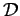

Inhalt Index DeskTop Bronstein

 Integraltransformationen Z-Transformation Eigenschaften der Z-Transformation
Integraltransformationen Z-Transformation Eigenschaften der Z-Transformation


Beschreibt man eine diskrete Funktion f(t) als Treppenfunktion, dann gilt:
| (15.127) |
Auf diese stückweise konstante Funktion läßt sich die LAPLACE-Transformation anwenden, und man erhält für T=1:
Die unendliche Reihe in (15.128) wird auch als diskrete LAPLACE-Transformation bezeichnet und mit dem Symbol  gekennzeichnet:
Setzt man in (15.129) , dann stellt eine Reihe nach absteigenden Potenzen von z dar, eine sogenannte LAURENT-Reihe. Mit der Substitution , die zu dem Namen Z-Transformation geführt hat, erhält man schließlich aus (15.128) den folgenden Zusammenhang zwischen LAPLACE- und Z-Transformation im Falle von Treppenfunktionen:
| (15.130a) |
bzw.
| (15.130b) |
Auf diese Weise lassen sich Korrespondenzen der Z-Transformation (Tabelle Z-Transformationen) in Korrespondenzen der LAPLACE-Transformation (s. Tabelle LAPLACE-Transformation) für Treppenfunktionen umrechnen und umgekehrt.